NEWS
The DOWNLOAD page now include 138 new - and free - audio tracks for the 1986 textbook LATIN-AMERICAN PERCUSSION
... and here is also a couple of photos from nice situations from the last couple of years.
DOWNLOAD-siden indeholder nu 138 nye - og gratis - lydspor til lærebogen LATIN-AMERICAN PERCUSSION fra 1986
... og her er også et par fotos fra gode situationer fra de seneste år.
Since 2011 - a great job as International Percussion Tutor at Royal College of Music, Manchester. Here together with my boss Simone Rebello.
Siden 2011 - et fantastisk job som International Percussion Tutor på Royal College of Music, Manchester. Her sammen med min chef Simone Rebello.
Update 2015-2026Opdatering 2015-2026
Latin Vibes - Latin jazz quartet with Morten Grønvad, Ethan Weisgard and Peter Danstrup (2013- ). Album: "Meet the Latin Vibes" (2024).
New Organ Trio (2022-2023). Album: "Something New, Borrowed and Blue" (2023).
Son Portillas (2023).
Big Apple Big Band (2018).
International Percussion Tutor at Royal Northern College of Music, Manchester, 2011-2019. Workshops at RNCM, Royal Academy of Music, Guildhall School of Music and Birmingham Conservatoire through 2019.
Germany, Flensburg. Percussion workshop and Drum Circle (2018).
Norway. Finnsnes Jazz Festival with Karin Krog, Roger Johansen a.o. (2015).
Concerts with Dave Hassell & Apitos and Paul Clarvis (latest 2015).
Salsa Na' Ma, Coco Son and Krølle & Cocodrilo are still performing.
Latin Vibes - latin jazz-kvartet med Morten Grønvad, Ethan Weisgard og Peter Danstrup (2013- ). Album: "Meet the Latin Vibes" (2024).
New Organ Trio (2022-2023). Album: "Something New, Borrowed and Blue" (2023).
Son Portillas (2023).
Big Apple Big Band (2018).
International Percussion Tutor på Royal Northern College of Music, Manchester, 2011-2019. Workshops på RNCM, Royal Academy of Music, Guildhall School of Music og Birmingham Conservatoire frem til 2019.
Tyskland, Flensborg. Percussion-workshop og Drum Circle (2018).
Norge. Finnsnes Jazz Festival med Karin Krog, Roger Johansen m.fl. (2015).
Koncerter med Dave Hassell & Apitos og Paul Clarvis (senest 2015).
Salsa Na' Ma, Coco Son og Krølle & Cocodrilo spiller stadig.
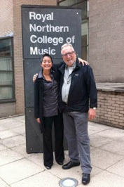
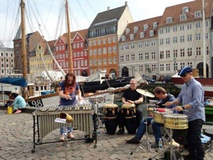
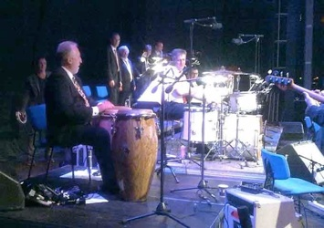
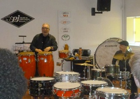
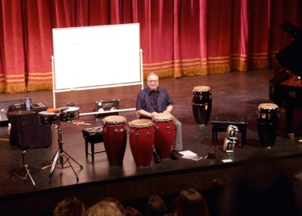
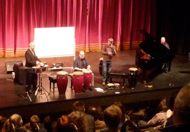
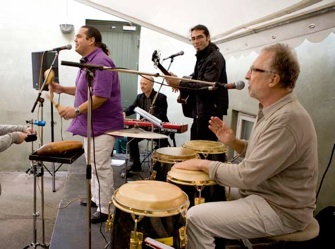
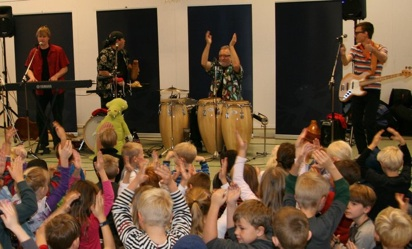
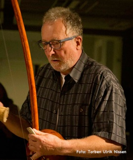
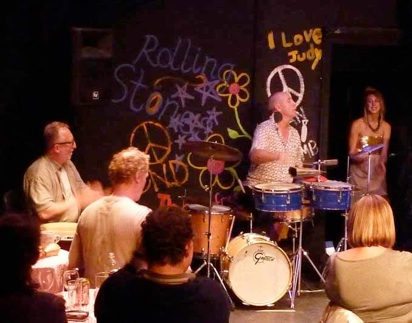
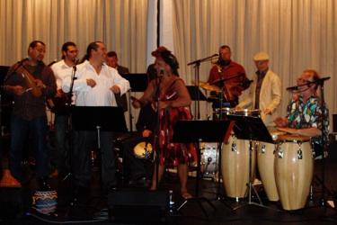
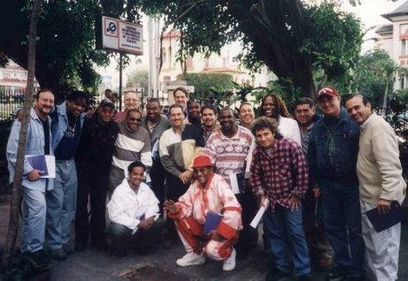
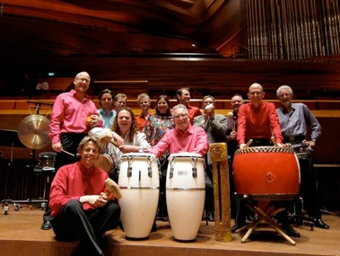
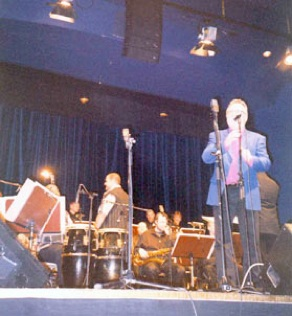
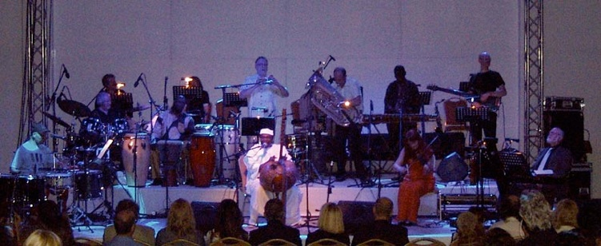